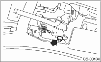

1. Set the drive select lever to the HI position.
2. Remove the drive select lever knob.
3. Remove the console box. 
4. Loosen the wheel nuts.

5. Check that the transmission is in the HI position. If not in HI position, pull the cable to put the transmission in HI position.
6. Tighten the cable eye end bolt until it just stops.
Tightening torque:
18 N·m (1.8 kgf-m, 13.0 ft-lb)
7. Move the drive select lever, and set the transmission positions to HI or LO. If it does not move, readjust the cable.